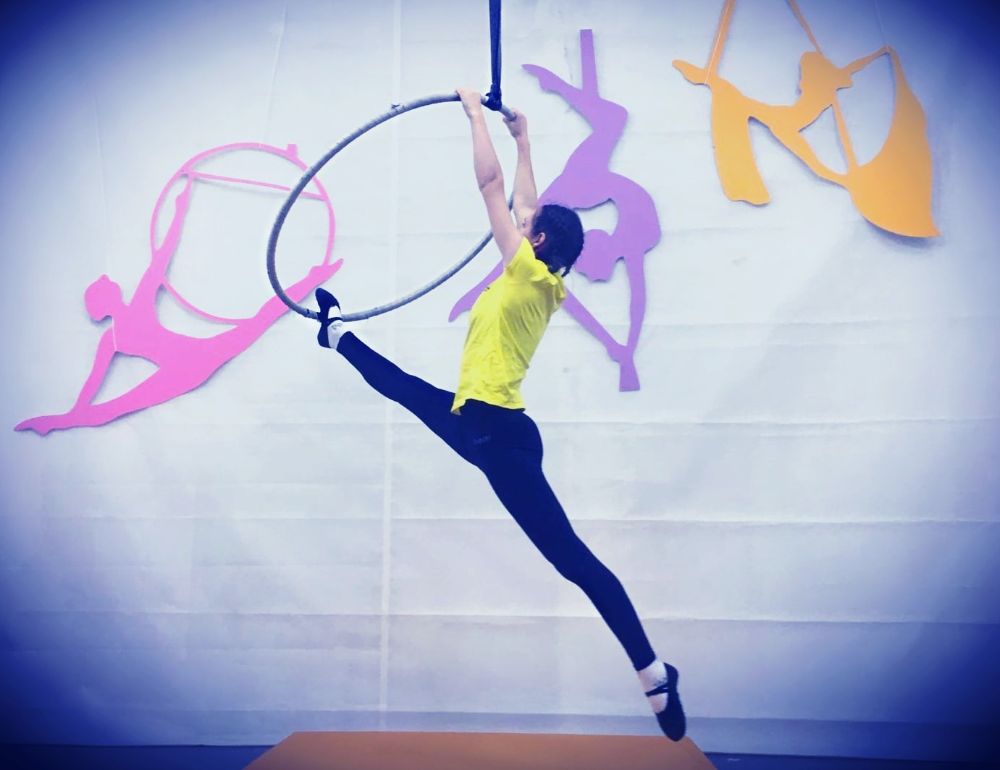
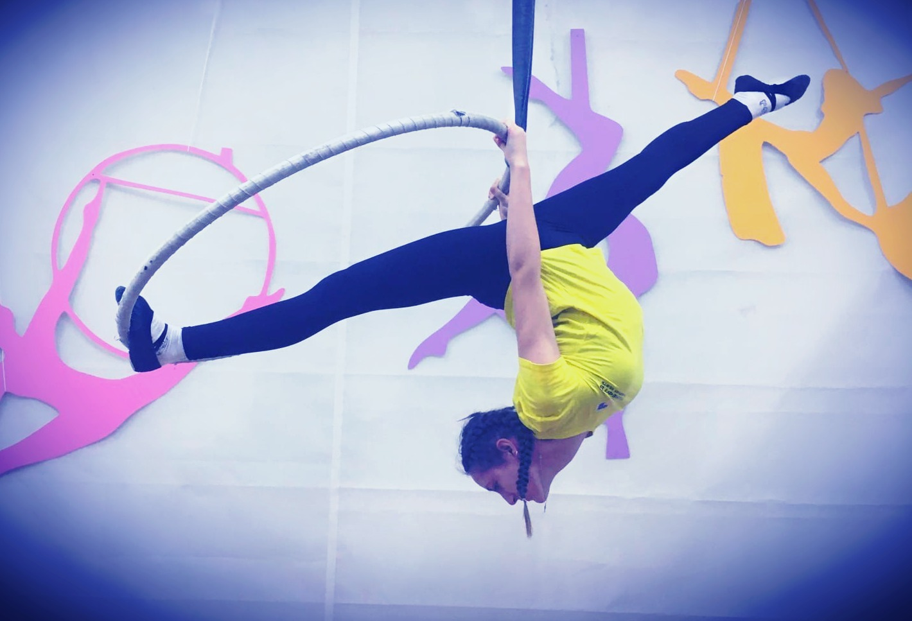
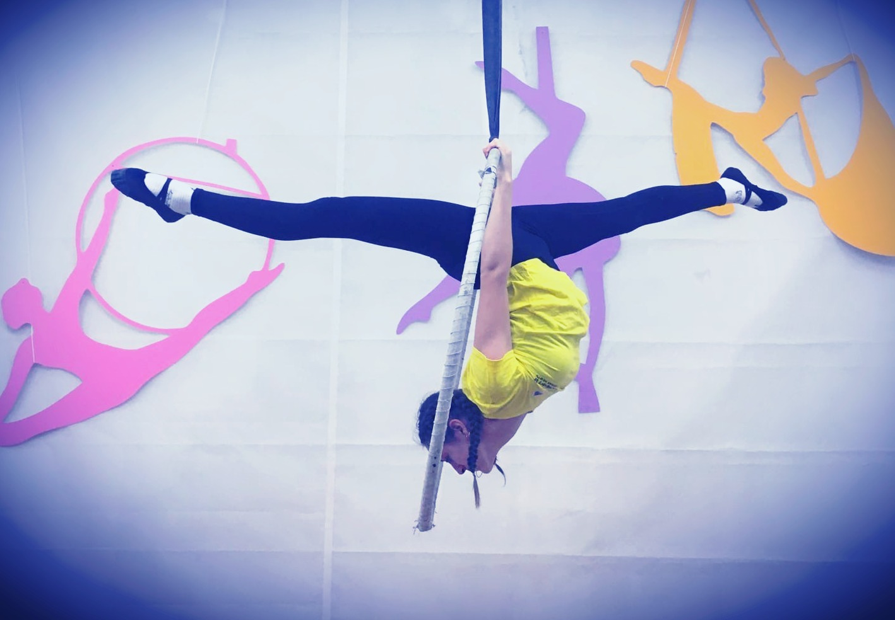
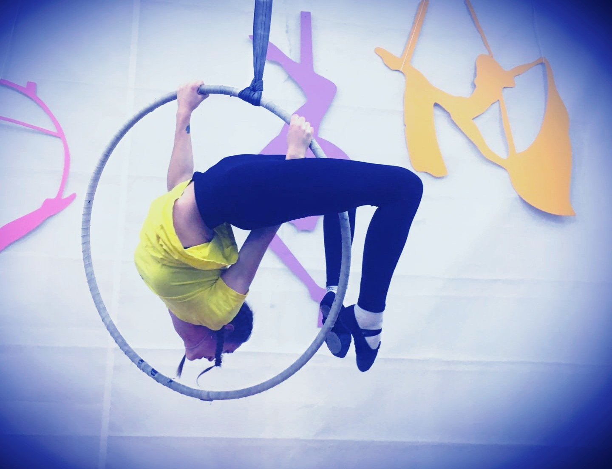

(Категория: шпагаты)
Выполнен "Китайский шпагат" (из нормативов начального уровня)
Из элемента “Китайский шпагат” перейти в “Вертикальный шпагат”: перенести свободную ногу вверх путем сгибания колена, раскрыть шпагатную линию, расправить плечи и выпрямить спину. Колени и носки натянуты. Затем перейти в “Горизонтальный шпагат”: убрать опорную ногу с кольца и перевести ее в горизонтальное положение. После этого выполнить элемент “Колечко” (см. “Вис на нижней дуге” из Нормативов начального уровня). Колени и носки натянуты.
✔ Выполнено 3 шпагата
✔ Выполнен элемент "Колечко"
✔ Удержание каждого шпагата 3 секунды
❊ Шпагатная линия не оценивается
(Категория: висы)


Стоя на полу.
Схватиться за кольцо двумя руками обратным хватом на расстоянии, равному ширине плеч, сделать подъем-переворот, сделать складку, затем взяться руками по обе стороны кольца, увести ноги за верхнюю часть кольца спереди, образуя прогиб в спине (на выдохе). Колени и носки натянуты.
✔ Выполнен подъем-переворот
✔ Выполнена складка
✔ Выполнен элемент "Птичье гнездо"
✔ Удержание каждого элемента 3 секунды